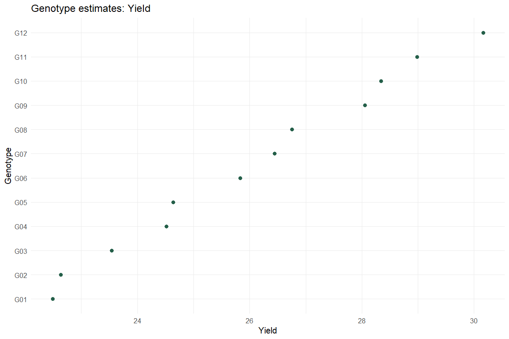
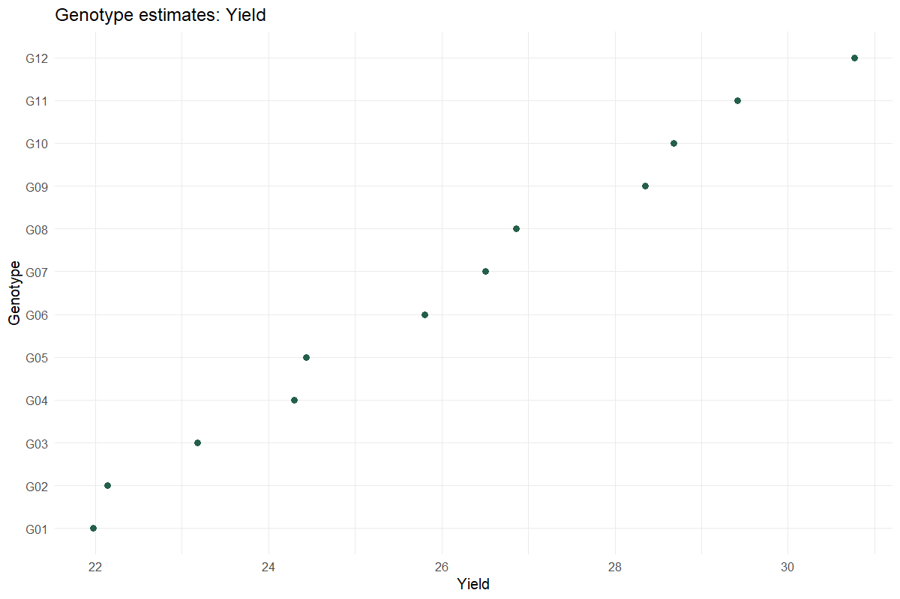

Worked analysis · 2 executable examples
Incomplete-Block Trials
Recover genotype information across small blocks
Question and data
Provide Genotype, Rep, Block and numeric traits. Every genotype must occur once in each complete replicate; incomplete blocks must be equal-sized and smaller than a replicate.
Read and report the results
Replication is fixed and incomplete blocks within replication are random. Choose fixed genotypes for adjusted means or random genotypes for BLUPs. Report the model, variance components and any boundary diagnostics.
Run the examples
From the repository root, restore the locked dependencies and load the app functions. These are source-checkout examples, not an installed package API.
source("tools/example-cases.R")
load_drdesign()In Shiny, select this module from its workflow heading, upload the example CSV, map the columns, review observations and run. Each R example states the analysis options to reproduce.
incomplete-random
Synthetic teaching data; not evidence from a field experiment.
Input
| Genotype | Rep | Yield | Height | Maturity | Block |
|---|---|---|---|---|---|
| G01 | R1 | 22.691 | 50.556 | 102.324 | B1 |
| G02 | R1 | 20.013 | 47.566 | 102.328 | B1 |
| G03 | R1 | 23.957 | 55.490 | 99.823 | B1 |
| G04 | R1 | 24.046 | 59.147 | 96.930 | B2 |
| G05 | R1 | 22.649 | 52.990 | 96.123 | B2 |
| G06 | R1 | 27.087 | 53.629 | 97.962 | B2 |
| G07 | R1 | 25.236 | 62.330 | 100.571 | B3 |
| G08 | R1 | 25.931 | 62.159 | 101.368 | B3 |
Showing up to 8 of 36 observations. The CSV contains every row.
Analysis
data <- research_example("incomplete-block")
result <- run_genetic_variability(data,"Yield",incomplete=TRUE,genotype_random=TRUE)Computed output
Yield genetic parameters 1 rows
| Trait | Genetic Variance | Residual Variance | H2 plot conditional on blocks | H2 entry mean balanced RCBD | GCV percent | PCV plot percent | Selection Accuracy balanced RCBD | Genetic Advance entry mean |
|---|---|---|---|---|---|---|---|---|
| Yield | 7.341 | 3.222 | 0.695 | NA | 10.408 | 12.485 | NA | NA |
Yield variance components 3 rows
| grp | var1 | var2 | vcov | sdcor |
|---|---|---|---|---|
| GEN | (Intercept) | NA | 7.341 | 2.710 |
| REP:BLOCK | (Intercept) | NA | 0.000 | 0.000 |
| Residual | NA | NA | 3.222 | 1.795 |
Yield BLUPs 12 rows
| Rank | Genotype | Genotypic effect (BLUP) | Predicted | Conditional SE | Effect interval lower | Effect interval upper |
|---|---|---|---|---|---|---|
| 1 | G12 | 4.130 | 30.162 | 0.968 | 2.232 | 6.027 |
| 2 | G11 | 2.954 | 28.986 | 0.968 | 1.057 | 4.851 |
| 3 | G10 | 2.307 | 28.339 | 0.968 | 0.410 | 4.204 |
| 4 | G09 | 2.019 | 28.051 | 0.968 | 0.122 | 3.916 |
| 5 | G08 | 0.724 | 26.756 | 0.968 | -1.173 | 2.621 |
| 6 | G07 | 0.412 | 26.444 | 0.968 | -1.485 | 2.309 |
| 7 | G06 | -0.203 | 25.829 | 0.968 | -2.100 | 1.694 |
| 8 | G05 | -1.397 | 24.635 | 0.968 | -3.294 | 0.500 |
| 9 | G04 | -1.517 | 24.515 | 0.968 | -3.414 | 0.380 |
| 10 | G03 | -2.489 | 23.543 | 0.968 | -4.386 | -0.592 |
| 11 | G02 | -3.399 | 22.633 | 0.968 | -5.296 | -1.502 |
| 12 | G01 | -3.540 | 22.492 | 0.968 | -5.437 | -1.643 |
Genotype trait matrix 12 rows
| Genotype | Yield |
|---|---|
| G01 | 22.492 |
| G02 | 22.633 |
| G03 | 23.543 |
| G04 | 24.515 |
| G05 | 24.635 |
| G06 | 25.829 |
| G07 | 26.444 |
| G08 | 26.756 |
| G09 | 28.051 |
| G10 | 28.339 |
| G11 | 28.986 |
| G12 | 30.162 |
Reviewed data 36 rows
| Genotype | Rep | Yield | Height | Maturity | Block |
|---|---|---|---|---|---|
| G01 | R1 | 22.691 | 50.556 | 102.324 | B1 |
| G02 | R1 | 20.013 | 47.566 | 102.328 | B1 |
| G03 | R1 | 23.957 | 55.490 | 99.823 | B1 |
| G04 | R1 | 24.046 | 59.147 | 96.930 | B2 |
| G05 | R1 | 22.649 | 52.990 | 96.123 | B2 |
| G06 | R1 | 27.087 | 53.629 | 97.962 | B2 |
| G07 | R1 | 25.236 | 62.330 | 100.571 | B3 |
| G08 | R1 | 25.931 | 62.159 | 101.368 | B3 |
| G09 | R1 | 29.522 | 56.210 | 99.436 | B3 |
| G10 | R1 | 26.708 | 60.624 | 96.368 | B4 |
| G11 | R1 | 29.533 | 68.144 | 94.800 | B4 |
| G12 | R1 | 31.249 | 64.502 | 95.990 | B4 |
| G01 | R2 | 19.603 | 46.230 | 101.061 | B1 |
| G02 | R2 | 23.812 | 53.579 | 102.572 | B2 |
| G03 | R2 | 23.315 | 58.267 | 101.351 | B2 |
| G04 | R2 | 22.434 | 52.418 | 98.336 | B2 |
| G05 | R2 | 26.771 | 51.947 | 96.116 | B3 |
| G06 | R2 | 24.539 | 60.626 | 96.547 | B3 |
| G07 | R2 | 25.843 | 61.570 | 99.050 | B3 |
| G08 | R2 | 29.004 | 55.357 | 101.139 | B4 |
| G09 | R2 | 26.154 | 58.723 | 100.710 | B4 |
| G10 | R2 | 29.457 | 66.778 | 97.973 | B4 |
| G11 | R2 | 30.571 | 64.045 | 95.261 | B1 |
| G12 | R2 | 28.449 | 59.404 | 94.883 | B1 |
| G01 | R3 | 23.628 | 51.642 | 99.403 | B2 |
| G02 | R3 | 22.581 | 57.282 | 101.888 | B2 |
| G03 | R3 | 22.264 | 51.900 | 102.269 | B3 |
| G04 | R3 | 26.400 | 50.356 | 100.013 | B3 |
| G05 | R3 | 23.871 | 58.845 | 97.009 | B3 |
| G06 | R3 | 25.770 | 60.911 | 95.836 | B4 |
| G07 | R3 | 28.435 | 54.599 | 97.388 | B4 |
| G08 | R3 | 25.652 | 56.869 | 100.054 | B4 |
| G09 | R3 | 29.362 | 65.305 | 101.200 | B1 |
| G10 | R3 | 29.867 | 63.570 | 99.587 | B1 |
| G11 | R3 | 28.150 | 58.290 | 96.515 | B1 |
| G12 | R3 | 32.599 | 64.095 | 94.625 | B2 |
Software versions 8 rows
| Source / term | Package | Version |
|---|---|---|
| R | 4.5.3 | |
| shiny | shiny | 1.13.0 |
| agricolae | agricolae | 1.3.7 |
| metan | metan | 1.19.0 |
| lme4 | lme4 | 2.0.1 |
| emmeans | emmeans | 2.0.2 |
| SpATS | SpATS | 1.0.20 |
| DiallelAnalysisR | DiallelAnalysisR | 0.6.0 |
Analysis settings 5 rows
| Setting | Value |
|---|---|
| Traits | Yield |
| Replication | Fixed |
| Genotype | Random |
| Selection_percent | 15 |
| Alpha | 0.05 |

incomplete-fixed
Synthetic teaching data; not evidence from a field experiment.
Input
| Genotype | Rep | Yield | Height | Maturity | Block |
|---|---|---|---|---|---|
| G01 | R1 | 22.691 | 50.556 | 102.324 | B1 |
| G02 | R1 | 20.013 | 47.566 | 102.328 | B1 |
| G03 | R1 | 23.957 | 55.490 | 99.823 | B1 |
| G04 | R1 | 24.046 | 59.147 | 96.930 | B2 |
| G05 | R1 | 22.649 | 52.990 | 96.123 | B2 |
| G06 | R1 | 27.087 | 53.629 | 97.962 | B2 |
| G07 | R1 | 25.236 | 62.330 | 100.571 | B3 |
| G08 | R1 | 25.931 | 62.159 | 101.368 | B3 |
Showing up to 8 of 36 observations. The CSV contains every row.
Analysis
data <- research_example("incomplete-block")
result <- run_genetic_variability(data,"Yield",incomplete=TRUE,genotype_random=FALSE)Computed output
Yield adjusted means 12 rows
| Genotype | Estimated mean | SE | df | CI lower | CI upper |
|---|---|---|---|---|---|
| G01 | 21.974 | 1.099 | 21.455 | 19.692 | 24.256 |
| G02 | 22.135 | 1.099 | 21.455 | 19.853 | 24.417 |
| G03 | 23.178 | 1.099 | 21.455 | 20.896 | 25.461 |
| G04 | 24.293 | 1.099 | 21.455 | 22.011 | 26.576 |
| G05 | 24.431 | 1.099 | 21.455 | 22.148 | 26.713 |
| G06 | 25.799 | 1.099 | 21.455 | 23.517 | 28.081 |
| G07 | 26.504 | 1.099 | 21.455 | 24.222 | 28.787 |
| G08 | 26.862 | 1.099 | 21.455 | 24.580 | 29.144 |
| G09 | 28.346 | 1.099 | 21.455 | 26.064 | 30.628 |
| G10 | 28.677 | 1.099 | 21.455 | 26.395 | 30.959 |
| G11 | 29.418 | 1.099 | 21.455 | 27.136 | 31.700 |
| G12 | 30.766 | 1.099 | 21.455 | 28.483 | 33.048 |
Results are averaged over the levels of: REP
Degrees-of-freedom method: kenward-roger
Confidence level used: 0.95
Yield ANOVA 2 rows
| Source / term | SS | MS | Numerator df | Denominator df | F | p-value |
|---|---|---|---|---|---|---|
| GEN | 277.705 | 25.246 | 11 | 22.000 | 7.836 | <0.001 |
| REP | 4.870 | 2.435 | 2 | 22.000 | 0.756 | 0.481 |
Genotype trait matrix 12 rows
| Genotype | Yield |
|---|---|
| G01 | 21.974 |
| G02 | 22.135 |
| G03 | 23.178 |
| G04 | 24.293 |
| G05 | 24.431 |
| G06 | 25.799 |
| G07 | 26.504 |
| G08 | 26.862 |
| G09 | 28.346 |
| G10 | 28.677 |
| G11 | 29.418 |
| G12 | 30.766 |
Reviewed data 36 rows
| Genotype | Rep | Yield | Height | Maturity | Block |
|---|---|---|---|---|---|
| G01 | R1 | 22.691 | 50.556 | 102.324 | B1 |
| G02 | R1 | 20.013 | 47.566 | 102.328 | B1 |
| G03 | R1 | 23.957 | 55.490 | 99.823 | B1 |
| G04 | R1 | 24.046 | 59.147 | 96.930 | B2 |
| G05 | R1 | 22.649 | 52.990 | 96.123 | B2 |
| G06 | R1 | 27.087 | 53.629 | 97.962 | B2 |
| G07 | R1 | 25.236 | 62.330 | 100.571 | B3 |
| G08 | R1 | 25.931 | 62.159 | 101.368 | B3 |
| G09 | R1 | 29.522 | 56.210 | 99.436 | B3 |
| G10 | R1 | 26.708 | 60.624 | 96.368 | B4 |
| G11 | R1 | 29.533 | 68.144 | 94.800 | B4 |
| G12 | R1 | 31.249 | 64.502 | 95.990 | B4 |
| G01 | R2 | 19.603 | 46.230 | 101.061 | B1 |
| G02 | R2 | 23.812 | 53.579 | 102.572 | B2 |
| G03 | R2 | 23.315 | 58.267 | 101.351 | B2 |
| G04 | R2 | 22.434 | 52.418 | 98.336 | B2 |
| G05 | R2 | 26.771 | 51.947 | 96.116 | B3 |
| G06 | R2 | 24.539 | 60.626 | 96.547 | B3 |
| G07 | R2 | 25.843 | 61.570 | 99.050 | B3 |
| G08 | R2 | 29.004 | 55.357 | 101.139 | B4 |
| G09 | R2 | 26.154 | 58.723 | 100.710 | B4 |
| G10 | R2 | 29.457 | 66.778 | 97.973 | B4 |
| G11 | R2 | 30.571 | 64.045 | 95.261 | B1 |
| G12 | R2 | 28.449 | 59.404 | 94.883 | B1 |
| G01 | R3 | 23.628 | 51.642 | 99.403 | B2 |
| G02 | R3 | 22.581 | 57.282 | 101.888 | B2 |
| G03 | R3 | 22.264 | 51.900 | 102.269 | B3 |
| G04 | R3 | 26.400 | 50.356 | 100.013 | B3 |
| G05 | R3 | 23.871 | 58.845 | 97.009 | B3 |
| G06 | R3 | 25.770 | 60.911 | 95.836 | B4 |
| G07 | R3 | 28.435 | 54.599 | 97.388 | B4 |
| G08 | R3 | 25.652 | 56.869 | 100.054 | B4 |
| G09 | R3 | 29.362 | 65.305 | 101.200 | B1 |
| G10 | R3 | 29.867 | 63.570 | 99.587 | B1 |
| G11 | R3 | 28.150 | 58.290 | 96.515 | B1 |
| G12 | R3 | 32.599 | 64.095 | 94.625 | B2 |
Software versions 8 rows
| Source / term | Package | Version |
|---|---|---|
| R | 4.5.3 | |
| shiny | shiny | 1.13.0 |
| agricolae | agricolae | 1.3.7 |
| metan | metan | 1.19.0 |
| lme4 | lme4 | 2.0.1 |
| emmeans | emmeans | 2.0.2 |
| SpATS | SpATS | 1.0.20 |
| DiallelAnalysisR | DiallelAnalysisR | 0.6.0 |
Analysis settings 5 rows
| Setting | Value |
|---|---|
| Traits | Yield |
| Replication | Fixed |
| Genotype | Fixed |
| Selection_percent | 15 |
| Alpha | 0.05 |

Reporting conventions
Tables: estimates and standard errors to 3 decimals; p-values below 0.001 shown as <0.001. Very small or large values use scientific notation. NA means unavailable or not applicable. CSV files retain numerical precision. Confidence levels and multiplicity corrections follow the stated analysis settings; shared letters indicate non-rejection, not equivalence.